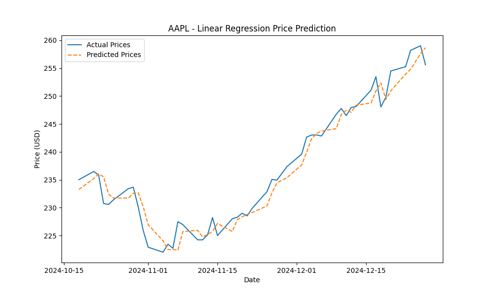
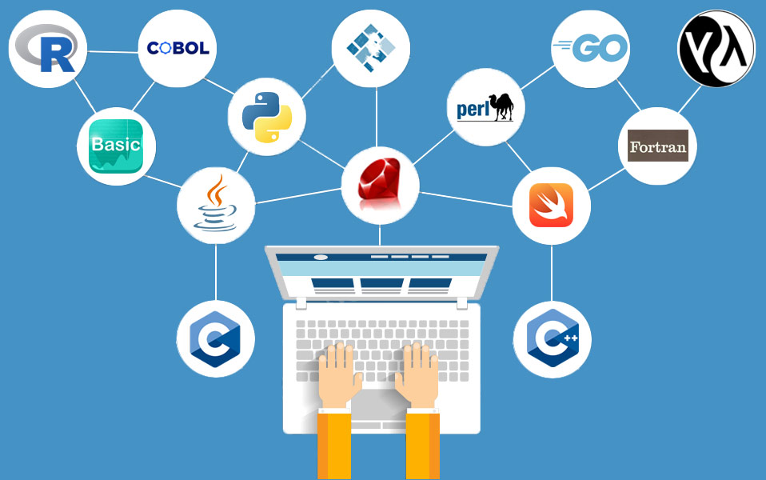

Computer Science
Stock ML
Machine learning stock predictor built to explore market signals, modeling, and practical experimentation in Python.
Projects
Some of this is technical, some of it is analytical, all of it is hands-on. The common thread is simple: make the idea clear, then make it work.

Computer Science
Machine learning stock predictor built to explore market signals, modeling, and practical experimentation in Python.

Coursework
Object-oriented programming foundations with classes, basic data structures, and problem solving in Java.
Coursework
Advanced data structures, file I/O, and larger Java assignments that pushed past the basics.
Systems
Systems programming work covering C, Unix, Linux, and lower-level thinking about how software behaves.

Programming Languages
Functional programming and language organization work using OCaml and Rust.
Business
Excel-based financial model for repayment schedules and the kind of spreadsheet detail work that needs to be right.
Business
Financial statements, budgeting work, and costing exercises built around clear models and usable outputs.
Analytics
SQL work focused on querying, structure, and making datasets answer actual business questions.